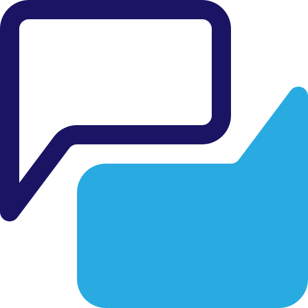
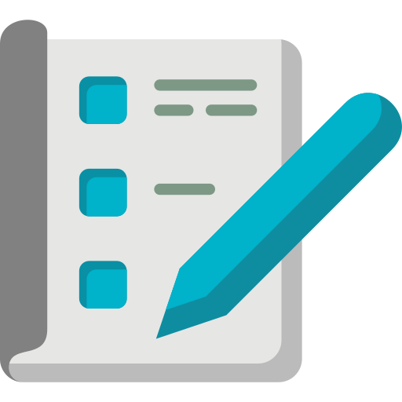
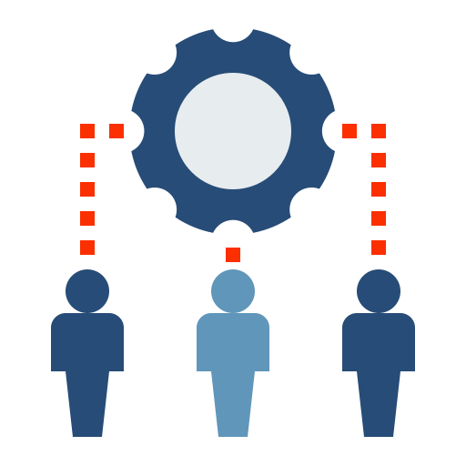

Habilidades relevantes

Investigación UX
Levantamiento y análisis de información de usuarios.
Interfaces digitales
Diseño centrado el usuario, accesibilidad y usabilidad.

Copywriting & UX Writing
Diseño de contenidos persuasivos centrados en el usuario.

Estrategia de contenido
Planificación de mensajes según objetivos de negocio.

Gestión de proyectos
Coordinación de tareas, equipos y objetivos.